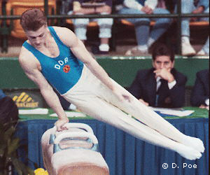

Ralf Buchner (GDR/GER)
1991 World HB Champion

Medal Total
Olympic Games: 1
Silver
World Championships: 1 Gold, 1 Bronze
European Championships: 1 Silver, 2 Bronze
Ralf was born on August 31, 1967, in Berlin. He trained at ASK Vorwarts Potsdam with coach Reinhard Ruckreim. A trained mechanical plant fitter, he won team silver at the 19888 Olympics, and was 2nd AA at the 1990 European Championships. After reunification, he moved to TK Hannover in July 1991 and in 1992 received a sports training stipend from Volkswagen.
Competition Results
1983
GDR Children's & Youth Spartakiade: 1st PB
1984
Stahlwerk Cup: 8th AA
1985
GDR Youth Championships: 3rd AA
1987
Blockbuster Competition: 2nd AA
DTV Cup: 5th AA
GDR Championships: 1st V
Walzwerker Cup: 1st AA
1988
DTV Cup: 5th AA
GDR Championships: 4th AA
GDR-HUN-SUI Meet: 1st Team, 6th AA
GDR-ITA Dual Meet: 1st Team, 6th AA
Olympic Games: 2nd Team, 18th AA (prelims)
1990
American Cup: 2nd AA
Cottbus International: 2nd AA, 1st V, 3rd R
DTV Cup: 3rd AA
European Championships: 7th AA, 2nd V, 3rd HB, 8th R
Gander Memorial: 4th AA
GDR-SUI Dual Meet: 1st Team, 3rd AA
GER-URS-USA: 4th AA
Intl. Mixed Pairs: 12th Team
1991
Cottbus International: 2nd AA, 1st FX, 1st V, 2nd R, 2nd HB
DTB Cup: 3rd AA
GER Championships: 3rd AA
GER-ESP Dual Meet: 1st Team, 2nd AA
GER-GBR-NOR-SWE: 3rd AA
GER-SUI Dual Meet: 1st Team, 2nd AA
World Championships: 3rd Team, 10th AA, 1st HB
World Sports Fair: 2nd AA, 1st PH, 2nd FX, 2nd V
1992
DTB Cup: 5th AA, 1st HB, 2nd PH, 2nd R, 4th PB, 6th HB
European Championships: 4th AA, 3rd FX, 4th V, 5th PH, 5th HB
GER-SUI-ROM: 9th AA
Messe Cup: 1st AA
Olympic Games: 4th Team, 33rd AA (prelims)
1993
GER-SUI Dual Meet: 1st Team, 10th AA
1994
DTB Cup: 6th HB
European Championships: 4th V
GER Championships: 2nd PH, 2nd R
1995
Cottbus International: 4th V, 6th HB
GER Championships: 4th AA
1997
GER Championships: 6th AA
This page was created on November
05, 2005 and was last updated on June 23, 2021.
© Gymn Forum